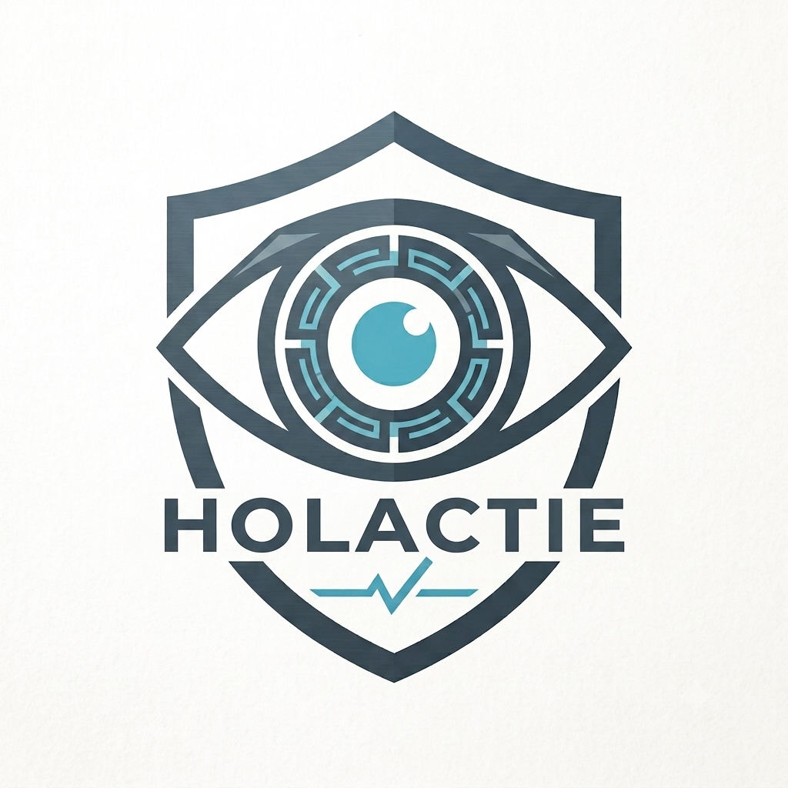

Quét file nhanh
Phân tích tệp ngay lập tức bằng SHA-256 và kiểm tra dữ liệu trên hệ thống bảo mật uy tín.

HolactieBảo mật thông minh cho Windows
Holactie giúp bạn kiểm tra file, xác định nguy cơ, và phân tích nhanh bằng VirusTotal cùng mô hình AI giúp tối ưu kết luận về phần mềm độc hại.
Tính năng chính
Phân tích tệp ngay lập tức bằng SHA-256 và kiểm tra dữ liệu trên hệ thống bảo mật uy tín.
Tích hợp Gemini để tổng hợp dữ liệu và hỗ trợ đánh giá mức độ nguy hiểm theo ngữ cảnh.
Xác định các loại như Trojan, Ransomware, Spyware và đánh giá chiến lược bảo vệ phù hợp.
Dễ dàng quét file trực tiếp từ Explorer bằng tính năng tích hợp trong ngữ cảnh chuột.
Quy trình hoạt động
Thả file hoặc chọn tệp cần kiểm tra từ máy tính.
Hệ thống sinh SHA-256 để xác định và đối chiếu dữ liệu.
Gửi thông tin để phân tích và xác định mức độ nguy hiểm.
AI và hệ thống tổng hợp kết quả để hỗ trợ quyết định an toàn.
Tải phần mềm